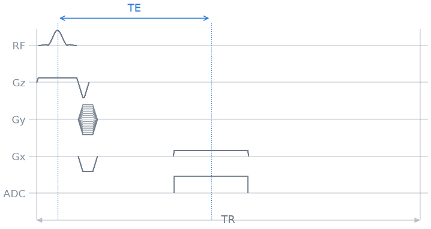
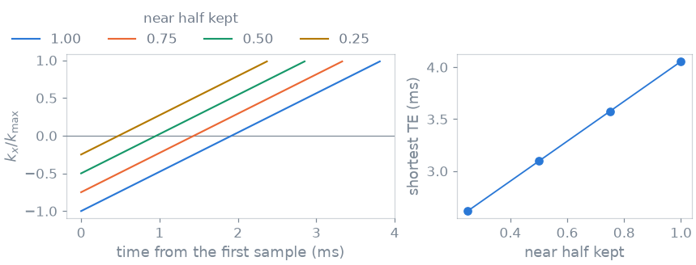

Note
Go to the end to download the full example code.
2. Echo and repetition time#
In lesson 1 the echo landed wherever the blocks put it: right after the prewinder, in the middle of the readout. A protocol asks for an echo time and a repetition time, so in this lesson you put the echo exactly where the protocol asks for it, find the shortest echo time your readout allows, and shorten it further by acquiring only part of the echo.
Learning objectives
Measure TE from the centre of the pulse to the centre of the echo, and TR from one excitation to the next.
Compute the delays that place the echo at TE and pad the repetition to TR, on the block-duration raster.
Find the shortest TE and TR, and refuse a protocol that asks for less.
Shorten TE with an asymmetric echo.
Previous: 1. Your first gradient echo. Next: 3. Spoiling, where you deal with the magnetisation one repetition leaves to the next.
Events#
You start from the same scanner, protocol and events as in lesson 1.
import numpy as np
import pypulseqpp as pp
system = pp.Opts(
max_grad=32.0,
grad_unit="mT/m",
max_slew=130.0,
slew_unit="T/m/s",
rf_dead_time=100e-6,
rf_ringdown_time=20e-6,
adc_dead_time=10e-6,
)
FOV = 220e-3
MATRIX = 128
delta_k = 1 / FOV
rf, gz, gz_reph = pp.make_sinc_pulse(
flip_angle=np.deg2rad(12.0),
duration=2e-3,
slice_thickness=5e-3,
apodization=0.5,
time_bw_product=4.0,
delay=system.rf_dead_time,
system=system,
use="excitation",
return_gz=True,
)
dwell, readout_time = pp.calc_adc_timing(
MATRIX,
26e-6,
grad_raster_time=system.grad_raster_time,
adc_raster_time=system.adc_raster_time,
)
gx = pp.make_trapezoid(
"x", flat_area=MATRIX * delta_k, flat_time=readout_time, system=system
)
adc = pp.make_adc(MATRIX, dwell=dwell, delay=gx.rise_time, system=system)
gx_pre = pp.make_trapezoid("x", area=-gx.area / 2, duration=1e-3, system=system)
gy_pre = pp.make_trapezoid("y", area=MATRIX / 2 * delta_k, duration=1e-3, system=system)
phase_steps = np.arange(-MATRIX // 2, MATRIX // 2) / (MATRIX / 2)
Echo time definition#
The echo time runs from the centre of the excitation pulse to the centre of the echo, the moment the readout crosses the centre of k-space. Both centres sit inside blocks, so you add up what lies between them:
in the excitation block, what follows the centre of the pulse: the block’s duration minus the pulse’s delay and its centre (
calc_rf_center()gives the centre within the shape);the whole encoding block;
in the readout block, what precedes the centre of the echo: the ADC delay and half the samples.
Between the encoding and the readout you add a delay block. Its duration is the echo time you ask for minus the sum above. When that sum is all there is, the delay is zero and the echo time is the shortest this readout allows.
rf_centre = rf.delay + pp.calc_rf_center(rf)[0]
fixed_te = (
pp.calc_duration(rf, gz)
- rf_centre
+ pp.calc_duration(gx_pre, gy_pre, gz_reph)
+ adc.delay
+ MATRIX / 2 * dwell
)
print(f"shortest TE {1e3 * fixed_te:.2f} ms")
shortest TE 4.04 ms
The repetition time runs from one excitation to the next, so the delay that closes the TR is whatever the four blocks do not fill. Both delays are times you choose, so you put them on the block-duration raster. You round the TE delay to the nearest raster point, which moves the echo by at most half a raster step.
def timing(te, tr):
"""The TE and TR delays, or an error when the protocol cannot be played."""
te_delay = pp.round_to_raster(te - fixed_te, system.block_duration_raster)
if te_delay < 0:
raise ValueError(
f"TE {1e3 * te:.2f} ms is shorter than the minimum, {1e3 * fixed_te:.2f} ms"
)
played = (
pp.calc_duration(rf, gz)
+ pp.calc_duration(gx_pre, gy_pre, gz_reph)
+ te_delay
+ pp.calc_duration(gx, adc)
)
tr_delay = pp.round_to_raster(tr - played, system.block_duration_raster)
if tr_delay < 0:
raise ValueError(
f"TR {1e3 * tr:.2f} ms is shorter than the minimum, {1e3 * played:.2f} ms"
)
return te_delay, tr_delay
This is the shape every sequence function in pypulseqpp follows, and the shape pulserver relies on to answer the scanner UI: compute what the protocol needs, and refuse with a clear message what it cannot have. Ask for a TE of 3 ms:
try:
timing(3e-3, 20e-3)
except ValueError as error:
print(error)
TE 3.00 ms is shorter than the minimum, 4.04 ms
Echo position#
Now the loop gets a fifth block, the TE delay, between the encoding and the readout. A delay block with zero duration is not allowed, so you only add it when there is something to wait.
def gradient_echo(te, tr, readout=(gx, adc, gx_pre)):
"""The gradient echo of lesson 1, with the echo at ``te`` and a TR of ``tr``."""
te_delay, tr_delay = timing(te, tr)
readout_gradient, window, prewinder = readout
seq = pp.Sequence(system)
for step in phase_steps:
seq.add_block(rf, gz)
seq.add_block(prewinder, pp.scale_grad(gy_pre, step), gz_reph)
if te_delay > 0:
seq.add_block(pp.make_delay(te_delay))
seq.add_block(readout_gradient, window)
seq.add_block(pp.make_delay(tr_delay))
return seq
TE = 8e-3
TR = 20e-3
seq = gradient_echo(TE, TR)
ok, errors = seq.check_timing()
print(f"timing ok: {ok}, scan time {seq.duration()[0]:.2f} s")
timing ok: True, scan time 2.56 s
The echo time is measured from the sequence itself. calculate_kspace()
integrates the gradients and returns, among other things, the k-space
position of every ADC sample and the times of the excitations and of the
samples. The echo is where the first line crosses \(k_x = 0\), halfway
between the two middle samples.
k_adc, _, t_excitation, _, t_adc = seq.calculate_kspace()
t_echo = np.interp(0.0, k_adc[0, :MATRIX], t_adc[:MATRIX])
print(f"TE {1e3 * (t_echo - t_excitation[0]):.3f} ms")
TE 8.000 ms
The echo lands on the TE you asked for. The diagram shows the TE delay you added between the encoding and the readout:
seq.paper_plot(tr=1)

Asymmetric readout#
Your shortest TE is set by what comes before the echo: the second half of the pulse, the encoding, and the first half of the readout. That last part is the largest, and you can shorten it.
Acquire only part of the line before the echo. The readout then starts closer to the centre of k-space, so the prewinder is smaller, and there are fewer samples to wait for before the echo. The far side of the line is still acquired in full, so the resolution does not change. The missing samples are what a partial-Fourier reconstruction fills in from conjugate symmetry.
You build the readout from the fraction of the near half you keep. The prewinder has to undo the readout’s ramp plus one \(\Delta k\) per sample before the echo, and half a step more, so the echo falls on a sample rather than between two.
HALF = MATRIX // 2
def asymmetric_readout(fraction):
"""Readout, ADC and prewinder keeping ``fraction`` of the near half-line."""
before = round(fraction * HALF)
samples = before + HALF
readout = pp.make_trapezoid(
"x",
amplitude=gx.amplitude,
flat_time=pp.round_to_raster(samples * dwell, system.grad_raster_time),
system=system,
)
window = pp.make_adc(samples, dwell=dwell, delay=readout.rise_time, system=system)
ramp_area = readout.amplitude * readout.rise_time / 2
prewinder = pp.make_trapezoid(
"x",
area=-(ramp_area + (before + 0.5) * delta_k),
duration=pp.calc_duration(gx_pre),
system=system,
)
return readout, window, prewinder, before
For each fraction, the shortest TE is what lies between the two centres, with the asymmetric readout in place of the full one:
FRACTIONS = (1.0, 0.75, 0.5, 0.25)
shortest = []
for fraction in FRACTIONS:
readout, window, prewinder, before = asymmetric_readout(fraction)
shortest.append(
pp.calc_duration(rf, gz)
- rf_centre
+ pp.calc_duration(prewinder, gy_pre, gz_reph)
+ window.delay
+ (before + 0.5) * dwell
)

near half kept 1.00: shortest TE 4.06 ms
near half kept 0.75: shortest TE 3.58 ms
near half kept 0.50: shortest TE 3.10 ms
near half kept 0.25: shortest TE 2.62 ms
The full readout comes out half a dwell later than in the previous section, because its echo now falls on a sample.
Every readout ends at \(+k_\mathrm{max}\), so all four have the same resolution; they differ in how much of the near side they sample, and in how soon the echo comes. A shorter TE means less \(T_2^*\) decay before the echo, and less sensitivity to off-resonance. It does not make the scan shorter: the TR stays where you put it.
You can play the asymmetric readout in the same loop, at a TE it could not reach before:
TE 3.10 ms, timing ok: True
The rasters and the echo-time arithmetic are explained in Pulseq file format.
Specification#
What this lesson built, stated the way you would ask an agent for it:
Extend the lesson-1 gradient echo with a TE delay block between the
encoding and the readout, so the echo (the readout's k=0 sample) lands
at the requested TE, measured from the RF centre. Round the TE and TR
delays to the block-duration raster, and raise a ValueError naming the
minimum when TE or TR is too short. Verify the echo time with
calculate_kspace. Add an asymmetric readout that keeps a fraction of the
near half-line, and report the shortest TE for fractions 1, 0.75, 0.5
and 0.25.
Total running time of the script: (0 minutes 0.302 seconds)